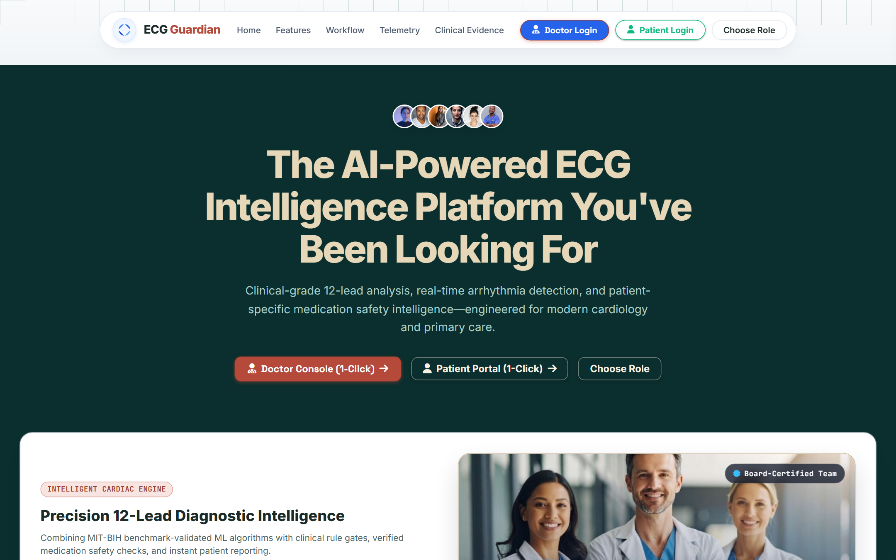
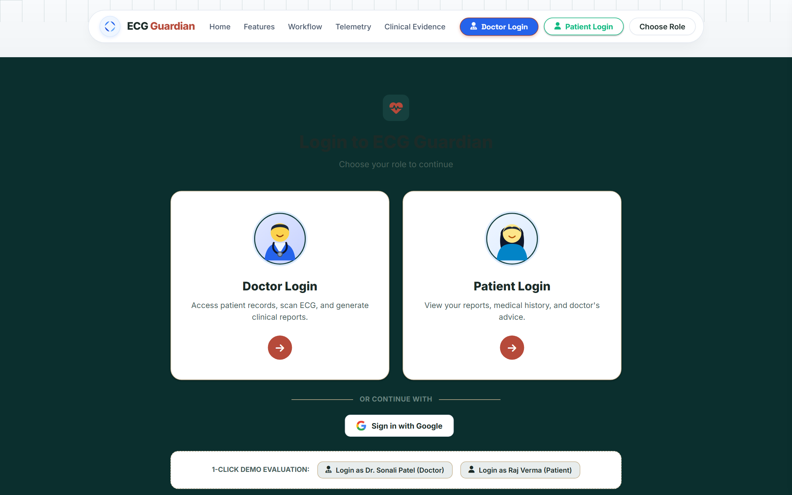
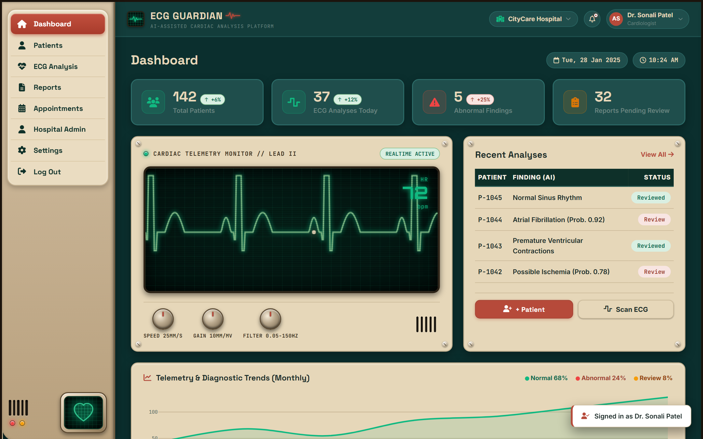
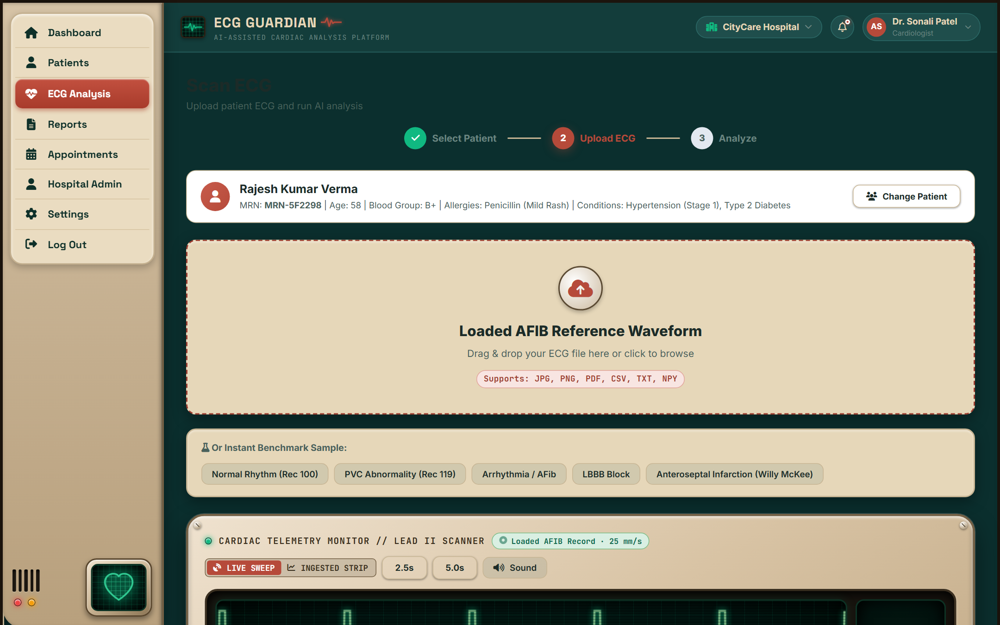
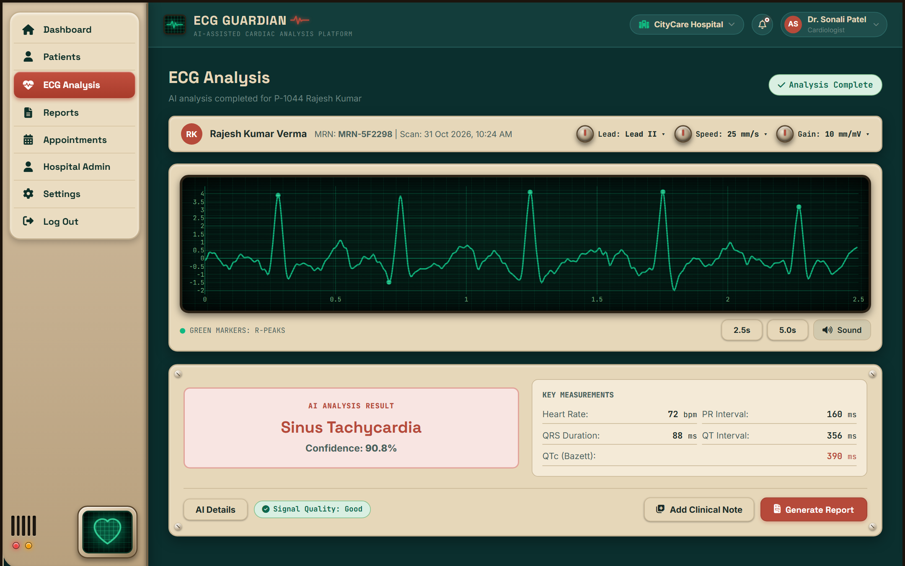
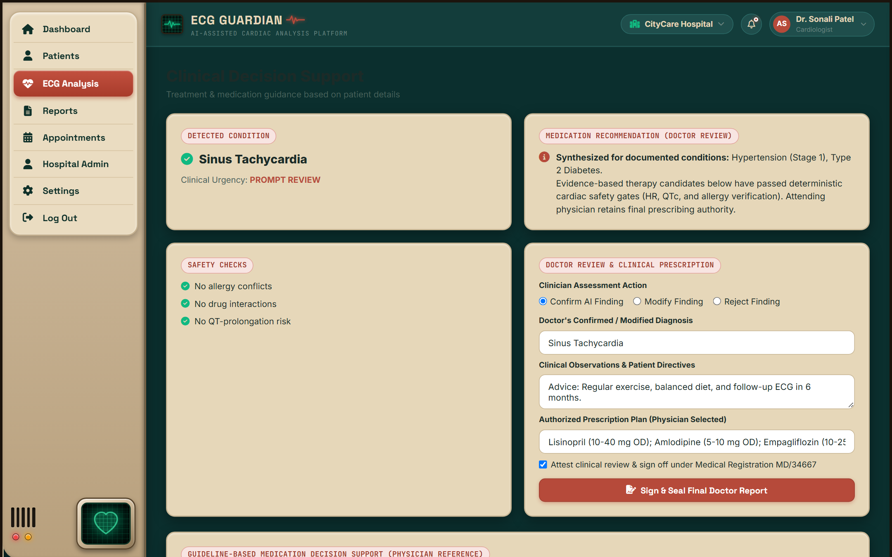
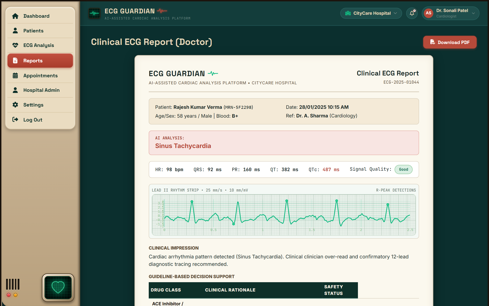
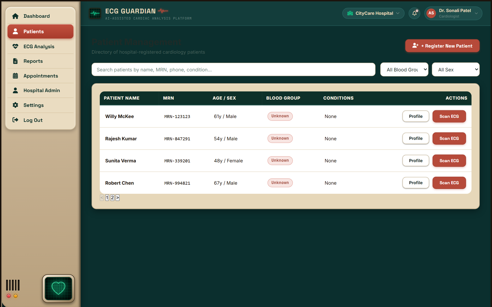
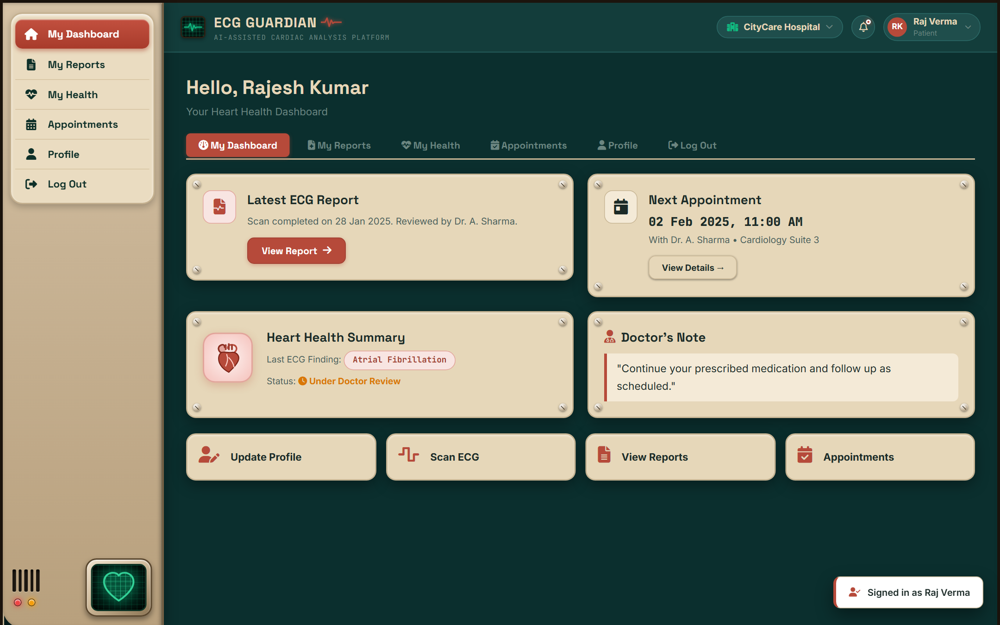

Multi-Label ECG
Arrhythmia Detection
Doctors Can Trust
ECG Guardian brings together real-time signal cleaning, Pan-Tompkins heartbeat measurements, SE-ResNet-1D deep learning, and visual Grad-CAM heatmaps inside a clinical platform built for both doctors and patients.
GRAD-CAM XAI

Solving Real Problems in Everyday ECG Reading
Standard automated ECG readers often give one label or a mysterious score without showing how they arrived at it.
Patients Often Have Multiple Conditions
A single heart tracing rarely tells just one story. A patient can easily show Atrial Fibrillation alongside a Bundle Branch Block or premature beats at the exact same time. Standard single-label models are forced to pick only one and miss the rest.
Doctors Cannot Trust a Black Box
If an AI says "Arrhythmia detected" with no explanation, a cardiologist cannot safely act on it. Clinicians need visual proof showing whether the network actually looked at missing P-waves, widened QRS spikes, or shifted ST segments.
One Connected Workflow
Instead of stopping at a research script, ECG Guardian wraps the AI model inside a practical hospital web app: upload a scan or CSV, verify intervals, review safety checks, sign the report, and let patients read clear summaries at home.
From Raw ECG Upload to Doctor-Signed Report
Every scan moves smoothly through five clear stages inside the Flask & PyTorch backend.
Universal Upload
- Accepts CSV, JSON & text traces
- Reads scanned PDFs & PNG/JPG ECGs
- Built-in MIT-BIH benchmark cases
- Resamples smoothly to 250 Hz
Signal Cleaning
- 0.5–45 Hz Butterworth bandpass
- 50/60 Hz powerline notch filter
- Double-median baseline fix
- Pan-Tompkins R-peaks & HRV
SE-ResNet-1D
- 1.99M parameter 1D ResNet
- Squeeze-and-Excitation blocks
- Temporal attention pooling
- Sigmoid multi-label scores
1D Grad-CAM
- Gradients on final conv layer
- Upsampled to 2,500 samples
- Pinpoints P, QRS & ST waves
- Integrated Gradients support
CDS & Reporting
- Urgency & allergy safety checks
- QT-prolongation warning gate
- Doctor review & prescription
- PDF export & patient portal
A Clean, Approachable Clinical Gateway
Designed so doctors and patients can jump straight into their portal without fighting cluttered menus.
-
1
Warm Clinical Contrast: Deep pine green paired with warm cream cards feels calm and readable—never harsh on tired eyes during hospital shifts.
-
2
Instant Portal Entry: Direct 1-click access to the Doctor Console or Patient Portal right from the hero and top bar.
-
3
Clear Clinical Scope: Explains 12-lead analysis, arrhythmia detection, and medication safety checks in plain language.
Dedicated Workspaces for Doctors and Patients
One login screen cleanly routes clinical staff and patients to completely tailored views.
-
1
Doctor Console (Dr. Sonali Patel): Unlocks patient registry management, raw ECG signal scanning, Grad-CAM inspection, and prescription sign-off.
-
2
Patient Portal (Raj Verma): Shows personal reports, easy-to-understand heart summaries, doctor notes, and upcoming appointments.
-
3
Reliable Session Handling: Backed by `/api/auth/login` with fast client fallback so demos and clinical logins never stall.

Cardiologist Dashboard & Live CRT Monitor
At CityCare Hospital, Dr. Sonali Patel sees cohort numbers, live telemetry, and urgent cases in one glance.

-
1
Daily Hospital Snapshot: Tracks 142 patients, 37 analyses today, 5 flagged abnormal findings, and 32 reports awaiting physician review.
-
2
Hardware-Style CRT Telemetry: Live Lead II oscilloscope display with rotary-style speed (25 mm/s), gain (10 mm/mV), and 0.05–150 Hz filter indicators.
-
3
Priority Triage Queue: Highlights cases like Atrial Fibrillation (Prob. 0.92) or Possible Ischemia (Prob. 0.78) with 1-click access to Scan ECG.
Universal ECG Ingestion & Wave Cleaning
Handles messy real-world recordings, scanned reports, and standard benchmark files cleanly.
-
1
Flexible File Ingestion: Upload CSV waveforms, JSON streams, or even scanned PDF/image ECG traces—plus built-in Normal, PVC, AFib, LBBB, and Infarction test cases.
-
2
Noise & Drift Removal: Applies Butterworth bandpass filtering (0.5–45 Hz), 50/60 Hz notch filtering, and double-median baseline wander correction.
-
3
Pan-Tompkins Beat Detection: Locates every R-peak accurately to compute Heart Rate, mean RR intervals, SDNN, RMSSD, and pNN50 heart rate variability.

SE-ResNet-1D Predictions with Visual Proof
Detects 10 arrhythmia & conduction classes simultaneously while marking R-peaks and key cardiac intervals.

-
1
Channel & Time Attention: SE-ResNet-1D weighs informative signal channels and focuses on pathological beats via temporal attention pooling.
-
2
1D Grad-CAM Explanations: Computes gradient heatmaps across the final convolutional layer so doctors can inspect the exact wave region driving each score.
-
3
Complete Interval Readout: Displays Heart Rate, PR Interval, QRS Duration, QT Interval, and Bazett-corrected QTc alongside confidence scores.
Clinical Decision Support & Safety Gates
Turns raw AI predictions into safe, actionable clinical review—with the doctor always in final control.
-
1
Urgency Stratification: Flags detected conditions with clear triage urgency (such as Prompt Review) alongside documented comorbidities like Hypertension or Diabetes.
-
2
Automated Safety Checks: Verifies allergy conflicts, drug-drug interactions, and Bazett QTc prolongation risk before displaying therapy candidates.
-
3
Doctor Has the Final Word: Cardiologists can Confirm, Modify, or Reject the AI finding, write observations, and seal it under their Medical Registration ID.

Signed Diagnostic Reports & Patient Directory
Every verified ECG becomes a structured hospital report tied to the patient's longitudinal record.

Formal Printable Doctor Report
Includes patient demographics, ECG intervals, AI findings, physician notes, digital sign-off, and 1-click PDF report export.

Active Patient Registry
Searchable hospital cohort directory with MRN tracking, quick registration, profile view, and direct "Scan ECG" triggers.
Empowering Patients, Proven on Benchmark Data
Patients get peace of mind with clear follow-ups, backed by verified SE-ResNet-1D validation performance.

-
✓
Patient-Friendly Dashboard: Raj Verma sees his latest ECG report status, doctor's direct guidance, and upcoming clinic appointment date cleanly.
-
✓
Seamless Follow-Up: Includes quick actions to view reports, check appointments, or initiate a new ECG checkup.